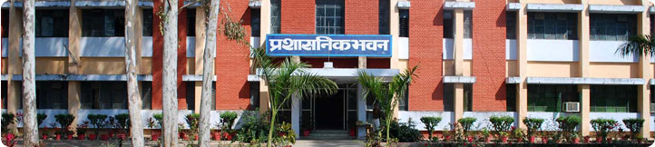

KNIT was initially established as the Faculty of Technology in the year 1976 by Kamla Nehru Memorial Trust. It was taken over by the Govt. of Uttar Pradesh in 1979 with a view to developing a full-fledged Engineering Institute in the Eastern UP region better known as the Awadh region. Later, in the year 1983 it was registered as a separate society and renamed as the Kamla Nehru Institute of Technology. The Institute is one of the leading technical Institutions of the region and is responsible for producing top-grade engineers with skill sets comparable with the best in the world. Being fully aware of its social responsibilities and the addressing the issue of application of technology to industry, it also renders the testing and consultancy services to the neighboring industries and various other agencies. The Institute is presently Autonomous College Of Dr. A.P.J. Abdul Kalam Technical University, formerly Uttar Pradesh Technical University, Lucknow